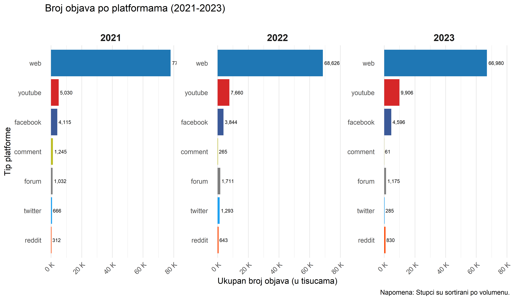
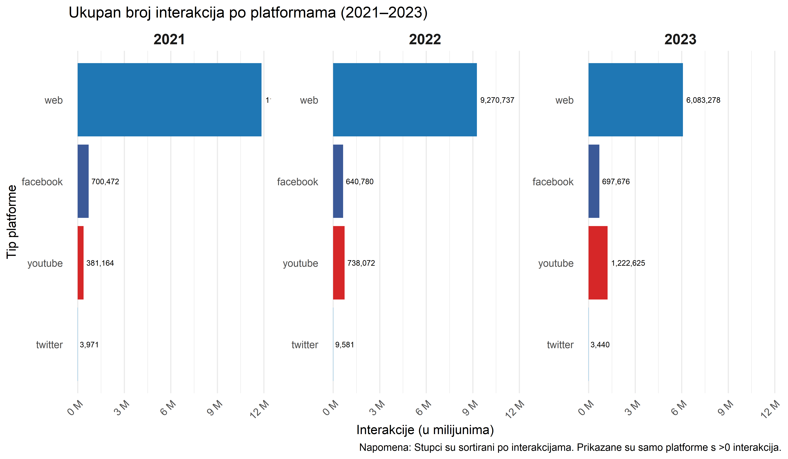
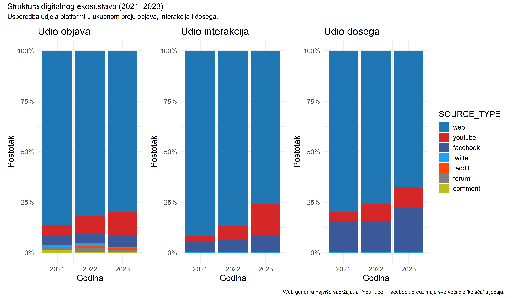
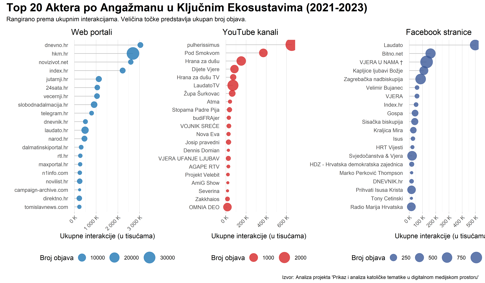
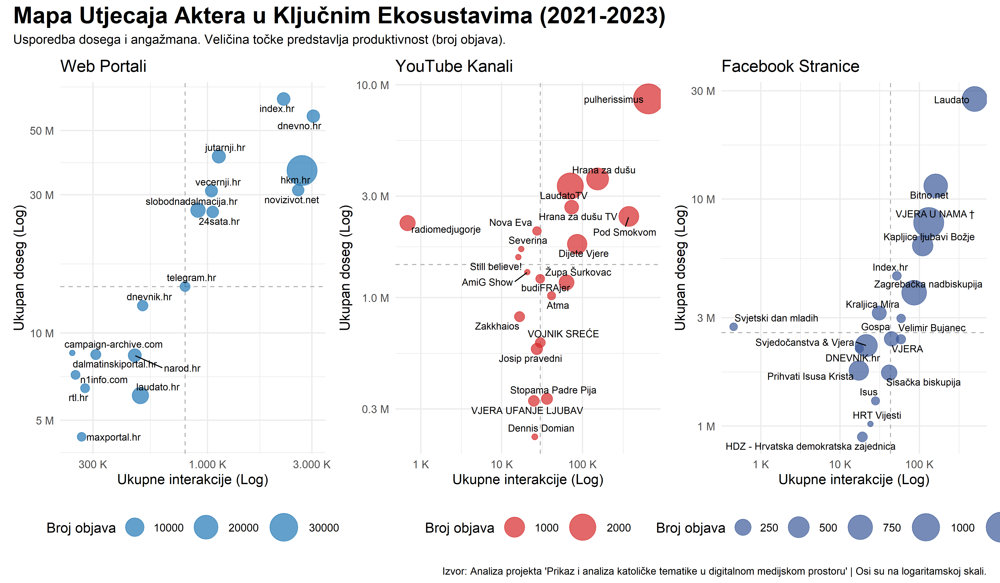

Mapa katoličkog digitalnog prostora u RH (2021-2023)
Mapiranje digitalne medijske arene
Ovaj dokument predstavlja prvu fazu analize u sklopu projekta Prikaz i analiza katoličke tematike u digitalnom medijskom prostoru. Cilj ove analize je stvoriti sveobuhvatnu i jasnu mapu ekosustava, odnosno temeljni pregled arene u kojoj se odvijaju rasprave o katoličkim temama u Hrvatskoj.
Koristeći bazu podataka od preko 250.000 medijskih objava prikupljenih u razdoblju od 1. siječnja 2021. do 31. prosinca 2023., odgovaramo na temeljna pitanja.
- Gdje se odvija rasprava? Analiziramo dominantne platforme (web, YouTube, Facebook i druge).
- Tko su ključni akteri? Identificiramo najproduktivnije i najutjecajnije medijske izvore.
- Kakva je dinamika utjecaja? Uspoređujemo doseg (reach) i angažman (interactions) kako bismo razumjeli različite strategije utjecaja.
Analiza je podijeljena u tri dijela. Kreće od općeg, makro pogleda na platforme, nastavlja s detaljnijim pregledom ključnih aktera i završava sa sintetskom Mapom utjecaja koja spaja sve dimenzije u jednu cjelinu.
Topografija digitalnog prostora
Prvi korak u razumijevanju ekosustava je analiza ključnih platformi. Promatramo tri metrike: Volumen (ukupan broj objava), Angažman (ukupne interakcije) i Doseg (ukupan reach).
Tko najviše producira sadržaj?
Ovaj grafikon prikazuje apsolutnu dominaciju tradicionalnih web portala kao glavnih proizvođača sadržaja. Kroz sve tri promatrane godine web generira znatno više objava od svih ostalih platformi zajedno. Ipak, primjetan je i kontinuirani rast volumena sadržaja na YouTubeu, što upućuje na sve veću važnost video formata.
Gdje se odvija najživlja rasprava?
Kada pogledamo angažman publike, slika postaje zanimljivija. Iako web i dalje vodi, YouTube i Facebook zauzimaju značajno veći udio u interakcijama nego što imaju u volumenu objava. Ovo je prvi pokazatelj da, premda web proizvodi najviše sadržaja, društvene mreže i video platforme uspješnije potiču direktan angažman publike.

Relativna važnost platformi
Apsolutni brojevi su korisni, ali relativni udjeli otkrivaju pravu dinamiku unutar ekosustava. Sljedeći grafikon uspoređuje udio svake platforme u ukupnom broju objava, interakcija i dosega.
Ova vizualizacija je ključna jer pokazuje asimetriju utjecaja.
- Lijevo (Objave): Web čini oko 80% svih objava.
- Sredina (Interakcije): Udio weba u interakcijama pada na približno 70 do 75%, dok udio YouTubea raste i doseže gotovo 20% u 2023. godini.
- Desno (Doseg): Sličan trend vidljiv je i kod dosega, gdje web gubi dio svoje dominacije u korist društvenih i video platformi.
Ovo znači da je sadržaj na YouTubeu i Facebooku u prosjeku znatno utjecajniji po objavi u odnosu na sadržaj web portala.

Najutjecajniji akteri
Nakon makro pogleda zumiramo na najvažnije pojedinačne aktere unutar tri ekosustava: Web, YouTube i Facebook.
Top 20 aktera po angažmanu (interakcijama)
Prvo rangiramo aktere prema najdirektnijoj mjeri angažmana, a to je ukupan broj interakcija. Ovdje primjećujemo jasnu podjelu.
- Web: Dominiraju veliki mainstream mediji (vecernji.hr, jutarnji.hr, index.hr) i specijalizirani vjerski portali (bitno.net).
- YouTube: Scenom dominiraju isključivo specijalizirani kanali (LaudatoTV, T Studio), pojedini svećenici i župe.
- Facebook: Prisutna je mješavina mainstream medija i specijaliziranih stranica.
Veličina točke predstavlja produktivnost (broj objava) i otkriva različite strategije. Neki akteri objavljuju puno sadržaja s manjim prosječnim angažmanom, dok drugi objavljuju rjeđe, ali s velikim odjekom.

Mapa utjecaja najvažnijih aktera
Konačno, spajamo sve u jednu sofisticiranu vizualizaciju. Mapa utjecaja prikazuje aktere u dvodimenzionalnom prostoru angažmana (X os) i dosega (Y os). To nam omogućuje identificiranje četiri osnovna arhetipa.
- Divovi (gore desno): Visok doseg i visok angažman. Apsolutni lideri.
- Graditelji zajednica (dolje desno): Nizak doseg, ali iznimno visok angažman. Imaju vjernu i aktivnu publiku.
- Megafoni (gore lijevo): Visok doseg, ali nizak angažman. Njihov sadržaj je vidljiv, ali ne potiče nužno raspravu.
- Nišni igrači (dolje lijevo): Fokusirani su na specifičnu, manju publiku s umjerenim dosegom i angažmanom.
Osi su prikazane na logaritamskoj skali kako bi se bolje prikazao širok raspon vrijednosti.

Zaključak i sljedeći koraci
Ova inicijalna analiza ekosustava otkriva višeslojnost digitalne arene. Ključni nalazi su sljedeći.
- Postoji jasna podjela rada. Web portali su dominantni proizvođači sadržaja, dok su YouTube i Facebook ključne arene za angažman publike.
- Akteri su specijalizirani. Najutjecajniji glasovi se značajno razlikuju od platforme do platforme, što upućuje na različite publike i komunikacijske strategije.
- Utjecaj je višedimenzionalan. Promatranje samo jedne metrike (primjerice samo interakcija) nije dovoljno. Mapa utjecaja pokazuje da akteri balansiraju između dosega, angažmana i produktivnosti.
Nakon što smo mapirali tko i gdje govori, sljedeća faza našeg istraživanja usredotočit će se na pitanje o čemu se govori. To će uključivati dubinsku tematsku analizu i analizu sentimenta kako bismo razumjeli ključne narative koji oblikuju katoličku tematiku u hrvatskom digitalnom prostoru.